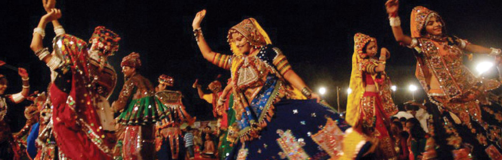

Welcome to Daman and Diu and Dadar and Nagar Haveli!

Daman and Diu
Daman and Diu, located on the western coast of India, are two separate districts that form a single Union
Territory. Known for their picturesque landscapes, colonial architecture, and vibrant cultural heritage, these
regions reflect a blend of Portuguese and Indian influences.
Festivals in Daman and Diu are celebrated with enthusiasm and showcase the regions' cultural diversity. Nariyal
Poornima, celebrated by the fishing community, marks the end of the monsoon season with colorful boat races and
cultural performances. Christmas and New Year are celebrated with great fervor, reflecting the Portuguese
heritage. Navratri and Diwali are also significant festivals, celebrated with traditional music, dance, and
feasting.
The cuisine of Daman and Diu is a delightful mix of Gujarati, Maharashtrian, and Portuguese flavors. Seafood is a
staple, with dishes like prawn curry, fish fry, and calamari being popular. Other traditional dishes include
Dhokla, Thepla, and Bebinca, a Portuguese-influenced dessert. The cuisine reflects the regions' coastal location
and cultural influences.
Music and dance in Daman and Diu are integral to their cultural heritage. Traditional dance forms like Garba and
Dandiya Raas are performed during festivals and celebrations, showcasing the regions' Gujarati influence. The
Portuguese legacy is evident in the music, with traditional Portuguese instruments and folk songs being a part of
the cultural landscape.
Architectural heritage in Daman and Diu includes colonial-era forts, churches, and other structures. The Fort of
Moti Daman, the Fort of St. Jerome in Nani Daman, and the Church of Bom Jesus are notable landmarks reflecting the
regions' historical and architectural significance. These sites offer a glimpse into the regions' colonial past
and cultural heritage.
Handicrafts from Daman and Diu include intricate shell crafts, bamboo products, and traditional embroidery. These
crafts are a testament to the regions' artistic skills and cultural heritage, offering unique souvenirs for
visitors.
Dadra and Nagar Haveli
Dadra and Nagar Haveli, nestled between the states of Gujarat and Maharashtra, is a Union Territory known for its
lush landscapes, tribal heritage, and cultural diversity. The culture of this region is characterized by its
indigenous traditions, folk arts, and vibrant festivals.
Festivals in Dadra and Nagar Haveli are celebrated with great zeal and reflect the region's tribal heritage. The
Tarpa Festival, celebrated by the Warli tribe, features traditional dances, music, and communal feasting. Diwali,
Holi, and Navratri are also significant festivals, marked by vibrant celebrations and cultural performances that
bring together the diverse communities of the region.
The cuisine of Dadra and Nagar Haveli is a blend of tribal, Gujarati, and Maharashtrian influences. Traditional
dishes include Bhakri (millet bread), Patal Bhaji (leafy vegetable curry), and Ubadiyu (a mixed vegetable dish).
The use of local ingredients and traditional cooking methods reflects the region's culinary heritage.
Music and dance are integral to the cultural life of Dadra and Nagar Haveli. Traditional dance forms like Tarpa,
performed during festivals and celebrations, are characterized by rhythmic movements and vibrant costumes. Folk
music, often accompanied by instruments like the tarpa (a wind instrument) and dhol (drum), is a vital part of the
region's cultural expression.
Architectural heritage in Dadra and Nagar Haveli includes ancient tribal structures and colonial-era buildings.
The Tribal Cultural Museum in Silvassa showcases the region's tribal heritage, displaying traditional artifacts,
tools, and art. The region's natural beauty is enhanced by its lush forests, rivers, and hills, offering
picturesque settings and opportunities for eco-tourism.
Handicrafts from Dadra and Nagar Haveli include Warli paintings, bamboo products, and traditional jewelry. These
crafts are a reflection of the region's tribal artistry and cultural heritage, offering unique and authentic
souvenirs for visitors.
Conclusion
Daman and Diu, and Dadra and Nagar Haveli, each offer a rich cultural tapestry that blends indigenous traditions,
colonial influences, and vibrant festivals. Their unique cuisines, music and dance forms, architectural heritage,
and traditional handicrafts reflect the diverse and dynamic cultures of these Union Territories. Visitors are
invited to explore and experience the rich cultural heritage, natural beauty, and warm hospitality of these
regions, making them captivating destinations in India.